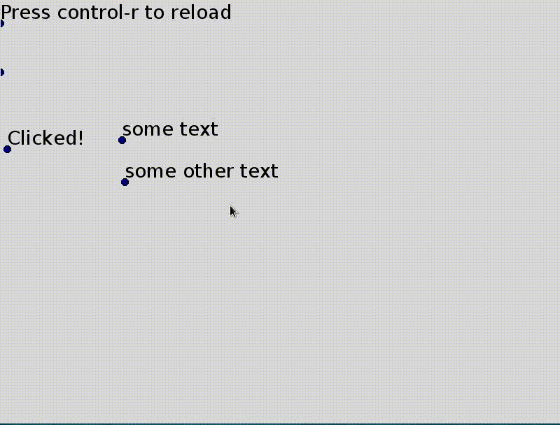

{kind=link}

A step is missing between pymetaterp, the (eventual) Python-like interpreter, and tkui the self modifying GUI editor: a GUI toolkit. Tkinter fills that role right now.
But while Tcl/Tk is pretty light on resources, the source code is by no means small. A GUI toolkit like Tcl/Tk is a library to help making GUIs. The library in this post will do that but will also try to help making GUI toolkits (and making itself). It doesn't have a name yet. Lets call it the GUI toolkit toolkit (guitktk) for now.
This post is formatted like a tutorial (for making a GUI toolkit using this library) but glosses over some important topics (marked by square brackets like [compgeo]). Its to keep this post shorter and more focused.
This library is written in Python 2 (instead of a Python-like variant) at the moment and so is all the code in this post.
The library's source is unfortunately not available yet (discussed in this footnote [source]) so its more of a showcase and discussion of ideas for now.
Some reasons for making this.
Guitktk will still use some library to draw on some blank canvas. But, we'll make provisions to allow swapping between multiple libraries for handling input events and drawing.
Tkinter's Canvas
Cairo with an XCB surface
OpenGL
As with tkui, we'll try to make it as self modifying as possible. This already need a decision.
How do we distinguish between input intended for editing and input intended for interacting with UI element?
We could make out program modal and have separate edit and interaction modes.
Like namespaces in a language, this lets us freely choose interactions for each mode without fear of interference. The downside is that anything that needs manipulation in both modes in alternation will need more clicks and keystrokes. And that might encourage us to "lock" the user in interaction mode.
Use separate keys/strokes for editing and interaction.
This would allow a more fluid transition between both modes and has a chance to encourage using both at the same time. But now we have to avoid collision and even if we do, might end up with unusual inputs for tasks.
Put elements in edit or interaction mode
This is similar to 1. with about the same advantages and drawbacks. The halos from Squeak Smalltalk more or less picked this option.
I ended up choosing 2. Interaction will be left mouse button only. I think OSX can more or less get away with that so it seems at least plausibly doable. Possibly adding shift+left click, control+left click later.
The right mouse button isn't use yet in case something else comes up or maybe it should be left for user customization only.
For editing, I will use keyboard keys as many more mouse buttons. The more important buttons will be on half the keyboard, let's say the left half.
You can instead use whichever input handling method/division you like and make the appropriate changes from this tutorial. This library doesn't favour any method over the others.
Copy default_functions.py to functions.py and start it to get a (almost) blank canvas.
As the message here announces, I've hard-coded control-r to "reload" the main part of the program we'll edit. It calls execfile(functions.py) so let's add something to that file now.
doc['drawing'].append(Node("text", value="hello world", p_botleft=P(100, 100)))
Pressing control-r adds "hello world" at the point (100, 100) [treedoc]. But there isn't really an interface yet. Our only interaction is to press control-r after editing function.py.
(You shouldn't have to ever close this window throughout this tutorial. Reloading should be enough, even in case of errors.)
As with tkui, we want some way to execute code from within the Canvas. Let's name the "hello world" text node we just added by giving it an id and use it as an interpreter's input.
Delete the first line added (doc['drawing'].append...) in functions.py and replace it with these two, reload and then delete them as well.
doc['drawing'][-1]["id"] = "console"
doc["console"]["value"] = ""
The first line gives the text node we added a (unique) name: console and the second line sets its content to the empty string.
We'll start with the easy part. Add functions in function.py for adding a letter, execute the content (of console) and clear it.
def add_letter(node_id=None):
node_id = node_id if node_id is not None else doc["editor.focus"]
if doc["editor.key_name"] == "BackSpace":
doc[node_id]["value"] = doc[node_id]["value"][:-1]
else:
doc[node_id]["value"] += doc["editor.key_char"]
def run_text(node_id, param="value"):
try:
co = compile(doc[node_id][param], "<ui>", "single")
exec co in globals()
except:
traceback.print_exc()
def clear(node_id):
doc[node_id]["value"] = ""
Glossing over editor.key_char for now [events].
Now for the interesting part, mapping key presses to these functions. We could use callbacks on input events and track some internal state using global variables or parameters of some class.
I did that the first time around and it was a bit of a mess even when the state related functions were grouped in some semantically meaningful blocks.
Events come in a serial fashion and we already have a language maker so lets use that and treat each event as a token in the language.
def key_press(event, key_name=None):
return event.type == Event.key_press and\
(key_name is None or event.key_name == key_name)
To get the interactions we want, try to match event tokens to rules (and run functions if they match).
input_callbacks = """
exec = key_press(Return)
(~key_press(Return) (key_press !add_letter(console) | @anything))*
key_press(Return) !run_text(console) !clear(console)
"""
The grammar [guigrammar] I picked is similar to the boot grammar but distinguishes four kind of calls.
True or False depending on if the event matches.! prefix): call the function with possibly one string argument given in the grammar.@ prefix): applies another rule of the grammar.? prefix): Same as events but without receiving an event as parameter or explicitly consuming an event.So in the example above, it matches a Return (Enter) followed by any number of events that are not a second Return keypress followed by a second Return keypress. Each event before the second Return that's a keypress calls add_letter (other events like mouse moves and click are ignored (@anything)). After the second Return, run_text and then clear are called.
The starting rule is always grammar for now so add
grammar = (@exec | @anything)*
to match @exec in a loop.
Lets take it for a spin (don't forget to hit control-r after adding the above to functions.py).
Let's make a very simple button.
def run_button():
root = doc[doc["selection.root"]]
xy = doc["editor.mouse_xy"]
for child in reversed(root):
if collide(child, xy):
print "clicked on", child["id"]
if "on_click" in child:
run_text(child["id"], "on_click")
return True
return False
collide from the library checks for collision detection [compgeo] and we use it to find the first element the mouse is over. We'll make left mouse click trigger this by adding a button rule and replacing the grammar rule.
button = mouse_press(1) ?run_button mouse_release(1)
grammar = (@exec | @button | @anything)*
to the grammar. The event matching functions are as expected
def mouse_press(event, button=None):
return event.type == Event.mouse_press and\
(button is None or event.button == int(button))
def mouse_release(event, button=None):
return event.type == Event.mouse_release and\
(button is None or event.button == int(button))
Lets see this in action! In the interpreter, run
doc['drawing'].append(Node("text", id="button1", value="Click me!", p_botleft=P(10, 210)))
doc['button1.on_click'] = "doc['button1.value'] = 'Clicked!'"
Click on this new button and its label should change.
Right now we can add and edit things on the canvas running things we added through the interpreter, which isn't a very graphical way of interaction.
We've been adding text nodes all over the place. Lets make that easier
text = key_press(t) !create_text
(~key_press(Return) (key_press !add_letter | @anything))*
key_press(Return)
grammar = (@exec | @button | @text | @anything)*
with a new function.
def create_text():
doc["drawing"].append(Node("text", value="",
p_botleft=doc["editor.mouse_xy"]))
doc["editor.focus"] = doc["drawing"][-1]["id"]
Now when we press t, a new text element is added at the mouse cursor and can be edited until we press Return.
Now to make text editable, change the text rule to
text = key_press(t) (?edit_text | !create_text)
(~key_press(Return) (key_press !add_letter | @anything))*
key_press(Return)
and add the new function
def edit_text():
root = doc[doc["selection.root"]]
for child, transform in root.dfs():
if child.name == "text" and\
collide(child, doc["editor.mouse_xy"], transform=transform, tolerance=8):
doc["editor.focus"] = child["id"]
return True
return False
This finds the first text node the mouse cursor is over. We put the ?edit_text predicate first in the grammar so that if it returns False, a new text element is created.

Optionally, we can do something with a newly created piece of text.
text = key_press(t) (?edit_text | !create_text)
(~key_press(Return) (key_press !add_letter | @anything))*
key_press(Return) !finished_edit_text
Lets make anything starting with a ! into a button, treating the rest of the text as a command to execute.
def finished_edit_text():
node = doc[doc["editor.focus"]]
text = node["value"]
if text.startswith("!"):
node["on_click"] = ex(text[1:])
And lets treat anything that starts with a equal sign (=) like a spreadsheet formula to be evaluated.
def finished_edit_text():
node = doc[doc["editor.focus"]]
text = node["value"]
if text.startswith("!"):
node["on_click"] = ex(text[1:])
elif text.startswith("="):
node["value"] = ex(text[1:])
To move text around, we'll move their bottom left corner.
move_point = key_press(e) ?grab_point (~key_press(e) @anything)* key_press(e) !drop_point
grammar = (@exec | @button | @text | @move_point | @anything)*
Press e once to grab a point and a second time to drop it (and alternative would be to hold e to drag; replace the last two key_press with key_release and write a key_release function to get that effect instead).
def grab_point():
root = doc[doc["selection"]["root"]]
for child, transform in root.dfs():
if child.name == "point" and\
collide(child, doc["editor.mouse_xy"], transform=transform, tolerance=8):
doc["editor.drag_start"] = doc["editor.mouse_xy"]
doc["editor.grabbed"] = child["id"]
child.transforms["editor"] = ex("('translate', editor.mouse_xy - editor.drag_start)")
return True
return False
def drop_point():
node = doc[doc["editor.grabbed"]]
simplify_transform(node)
doc["editor.drag_start"] = None
doc["editor.grabbed"] = None
Node.transforms is an ordered dictionnary for each node containing linear transformations and the order in which they should be applied. For the moment, they are more or less the SVG transforms [transforms].
simplify_transform applies these transforms and then clears the Node.transforms, essentially leaving everything at their original (visual) position but with a different representation.
Lets add some graphics element other than text! We'll add lines, paths and polygons.
new_line = key_press(l) !add_line
grammar = ( @exec | @button | @text | @move_point
| @new_line | @anything)*
with function
def add_line():
doc["drawing"].append(Node("path", fill_color=None, children=[
Node("line", p_start=doc["editor.mouse_xy"],
p_end=doc["editor.mouse_xy"] + P(50, 50))]))
The lines' endpoints can be moved by grabbing and moving the points as before.
For our GUI toolkit, we want containers that automatically align its contents like the Frames in Tkinter. First, we'll create the alignment functions and then add group nodes with auto-alignment.
def bboxes(nodes, transform=identity):
boxes = [child.bbox(child.transform.dot(transform))
for child in nodes]
boxes = zip(*[box for box in boxes if box != (None, None)])
if not boxes:
return (None, None)
return (numpy.min(numpy.vstack(boxes[0]), 0),
numpy.max(numpy.vstack(boxes[1]), 0))
def align(nodes, side=0, axis=0):
all_bbox = bboxes(nodes)
for node in nodes:
diff = all_bbox[side][axis] - node.bbox(node.transform)[side][axis]
if diff and axis == 0:
node.transforms["align"] = ('translate', P(diff, 0))
elif diff and axis == 1:
node.transforms["align"] = ('translate', P(0, diff))
axis and side together describe a cardinal direction (up, down, left or right). axis is either 0 (x-axis) or 1 (y-axis) and side is either 0 (towards -infinity) or 1 (towards +infinity).
bboxes finds the smallest bounding box containing all nodes.
Lets try it out from the interpreter and align the last three elements.
align(doc['drawing'][-3:])
Seems good. To undo an alignment, we can delete align from transforms of all nodes.
We also want to be able to place elements inside a container spaced evenly.
def distribute(nodes, side=0, axis=0, spacing=10):
all_bbox = bboxes(nodes)
val = all_bbox[side][axis]
for node in nodes:
bbox = node.bbox(node.transform)
diff = val - bbox[side][axis]
node.transforms["distribute"] = ('translate',
P(diff, 0) if axis == 0 else P(0, diff))
val += abs(bbox[1-side][axis] - bbox[side][axis])
val += spacing
Lets try it by running
distribute(doc['drawing'][-5:])
Now to create group nodes that automatically layout their children, we'll add a callback function that aligns and distributes the children of any node an auto_layout property. This callback is triggered whenever a node in the document changes.
def layout_callback(source, func, *args):
if source.get('auto_layout'):
self = source if type(source) == Node else source.node
nodes = self[1:]
for node in nodes:
if "distribute" in node.transforms:
del node.transforms["distribute"]
if "align" in node.transforms:
del node.transforms["align"]
all_bbox = self[0].bbox(self[0].transform)
align(nodes, side=self["side"], axis=1-self["axis"],
all_bbox=all_bbox)
distribute(nodes, self["side"], self["axis"],
all_bbox=all_bbox)
We assume the first child is a line from the top-left to the bottom right of the container. Their is no way to crop yet so they are just an indication of the position. Lets give it a try and add a group node with auto_layout.
We'll change align and distribute to accept an optional bounding box for the container.
def align(nodes, side=0, axis=0, all_bbox=None):
all_bbox = bboxes(nodes) if all_bbox is None else all_bbox
def distribute(nodes, side=0, axis=0, spacing=10, all_bbox=None):
all_bbox = bboxes(nodes) if all_bbox is None else all_bbox
Lets add a group with auto_layout by hand
doc['drawing'].append(Node('group', id='layout',
auto_layout=True,
side=0, axis=1, children=[
Node("line", p_start=P(400, 200),
p_end=P(600, 500))]))
doc['layout'].callbacks.append(layout_callback)
and see that it places its contents as they are added
doc['layout'].append(doc['drawing'][4])
doc['layout'].append(doc['drawing'][4])
doc['layout'].append(doc['drawing'][4])
Now we have all we need to create a Tkinter Listbox. Pick some keyboard inputs for added auto_layout groups and adding elements to them.
This concludes this tutorial where we saw how to make primitive (but customizable)
Not discussed in this post but already tried out and could be written about:
Adding more segments to paths
Rectangles
Align to center
Selection
Selection grouping ungrouping
(Visual) duplicate and transform
[source] There are quite a few design decisions about the internals that I'm really not sure of yet (like transforms, expressions, references). Its also at a hefty 2000 lines right now (that's excluding dependencies like undoable and excluding the contents of this tutorial). Some of that might be needed because of the different backends.
This post glosses over some important topics (marked by square brackets like [compgeo]). These topics are listed here with a brief description/discussion. Each of these might need a post of their own.
[guigrammar] Here's the full GUI grammar written in the boot grammar. It can probably use some improvements.
gui_grammar = r"""
comment = '#' (~'\n' anything)*
hspace = ' ' | '\t' | comment
indentation = (hspace* ('\r' '\n' | '\r' | '\n'))* hspace+
space = '\n' | '\r' | hspace
name = (letter | '_') (letter | digit | '_')*
expr = call | apply | parenthesis
escaped_char! = '\\' {'n'|'r'|'t'|'b'|'f'|'"'|'\''|'\\'}
call! = indentation? {('!'|'?')?=type name ('(' {balanced=args} ')')?}
apply! = indentation? '@' {name ('(' {balanced=args} ')')?}
parenthesis = "(" {or} ")"
not = "~" {expr=negation} | expr
quantified = not (('*' | '+' | '?')=quantifier)?
bound = quantified ('=' {name=inline})?
and = bound*
or = and ("|" {and})*
rule = spaces {name=rule_name '!'?=flags and=args ("=" {or})}
grammar = {rule*} spaces
balanced = (escaped_char | '(' balanced ')' | ~')' anything)*
"""